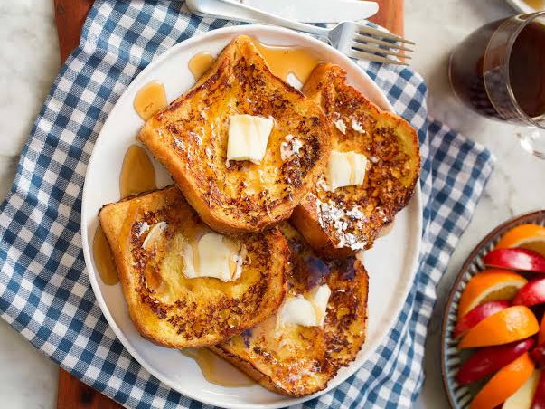

Marry Me French Toast

You may be asking yourself why the name of this recipe. Well, its really simple: The first thing we ate for breakfast together with my fiancée was some homemade french toast. I was trying to impress them while doing my best using an electric stove (I still can't get used to them). They ended being so much better than expected: Fluffly, custardy and with the perfect amount of sweetness to add your favorite toppings without it feeling to overwhelming.
I know this is a really simple recipe; being honest most of the ones written here are. But, they have such an special place in my heart, being an almost legendary dish for my own life story. And I believe that if you give them a try, they will at least become part of your no-hassle recipes to show your love to your friends and family.
Ingredients
- 3-5 slices of bread (it can be any type, but try to use something a little bit on the thick side).
- 2-3 eggs, preferably at room temperature
- 2/3-1 cup (160-200ml) milk
- 1/4 cup (150g) brown sugar
- 1 tsp (5g) cinnamon powder
- 1 tsp (5g) nutmeg powder
- 1 tsp (5g) vanilla extract
- A pinch of salt
- (Optional) Any toppings of your liking! (I really like melty cheese and honey on mine, don't judge me please!)
Instructions
- In a big bowl, add the eggs, salt and sugar beat them until homogenous, then incorpore the cinnamon, nutmeg and vanilla extract and keep whisking.
- When you finish mixing, add the milk slowly while whisking. This will help in creating a nice and creamy custard with no random bits of egg in it.
- Dip the bread slices in the raw custard, dredging them well on both sides. You can leave them for a bit but be careful, they can become really, really soggy.
- Heat up a pan to medium heat with your fat of preference (butter works the best but you do you) and start cooking the slices. They should get a nice and beautiful golden brown color with a little bit of crispiness. At this point, the toast should be soft yet not gooey.
- As soon as they are ready, put them on a plate and add your favorite toppings. If you are a psycho like me, you can also transform them into grilled cheese french toasts if you add some cheese on top while on the pan. Eat while hot!